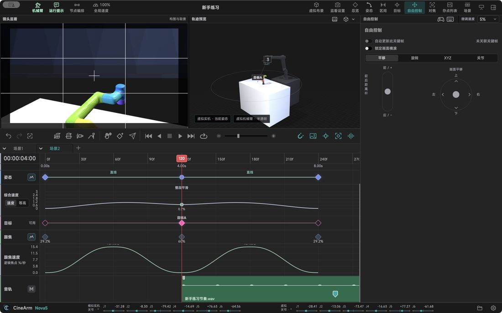

功能详解 / 自由操控：四种输入，哪种顺手用哪种
自由操控：四种输入，哪种顺手用哪种
找机位的时候不该被工具限制。
数字输入直接输关节角或末端位置，适合精确重复，也用于相机调平。
拖拽在三维视图直接拖动机械臂，边走边看画面。
键盘与手柄键盘做微调，手柄做推摇连续控制，都支持连续输入。
微调并写回在所选点位附近小范围调整，确认后写回该点，不必重新记录。
预设姿态默认初始姿态和 CR5 打包姿态可预览后执行，收工与运输时一键回位。
关节箭头点动按住对应关节方向移动、松开停止；限位报警时报警点动固定 1%，普通点动用所选微调速度。
停止语义松手、捕获丢失、失焦、切后台或 Esc 都会请求停止；准备阶段松手会取消启动，迟到应答不会重新运动。

本页内容来自 CineArm v0.1.46 的软件行为。